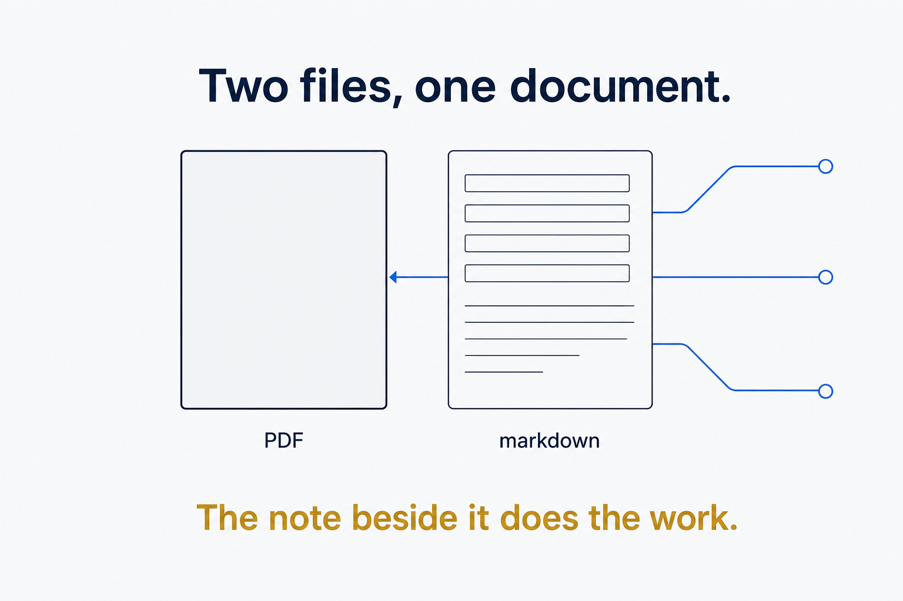
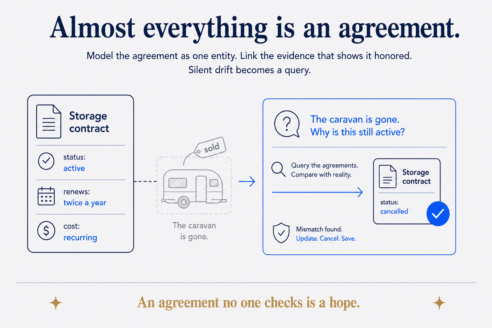
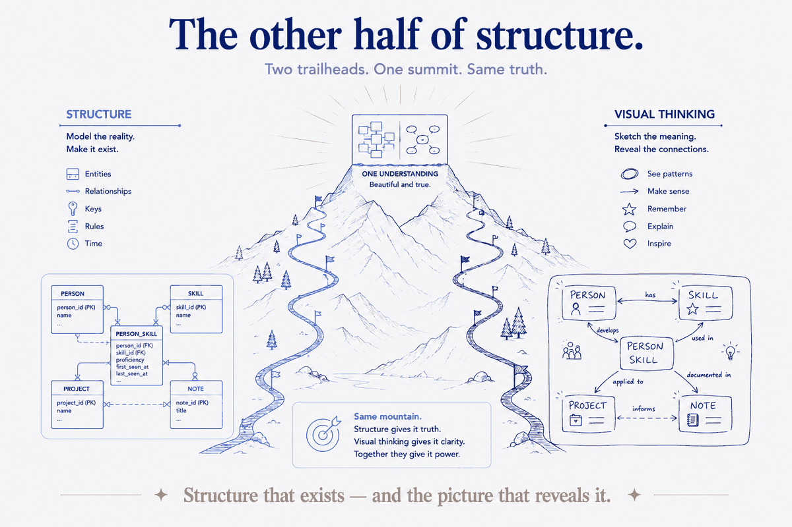
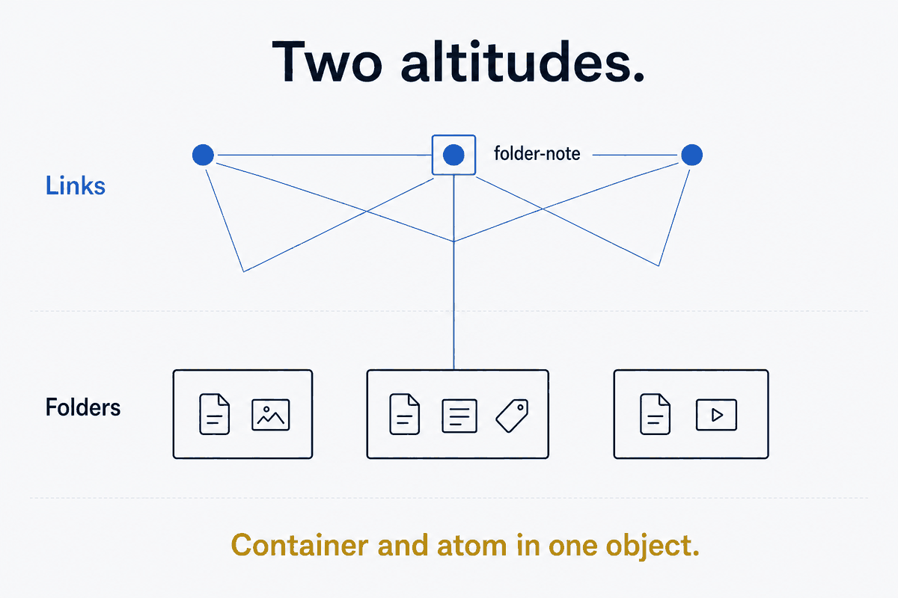
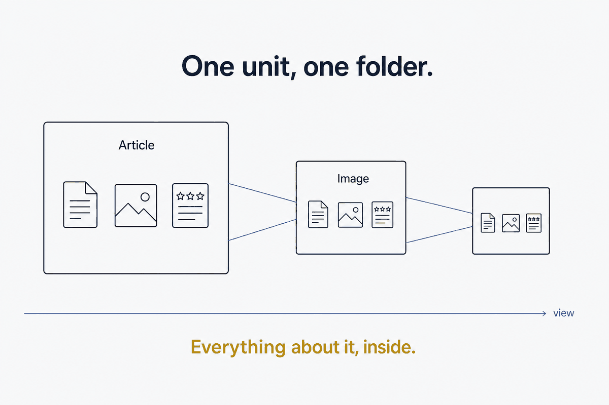
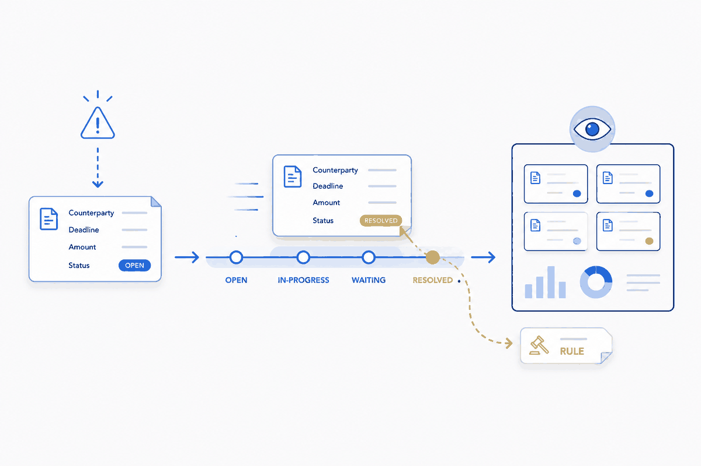
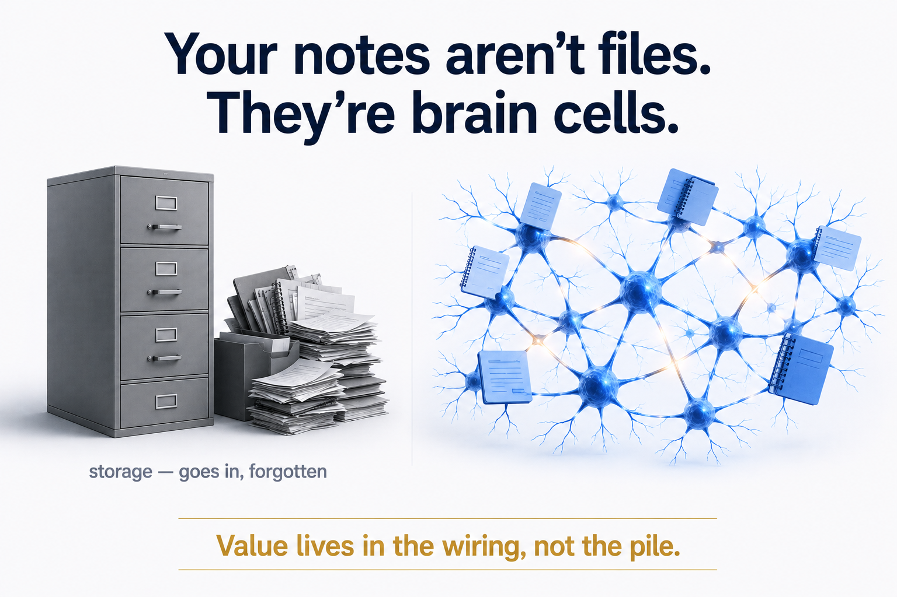
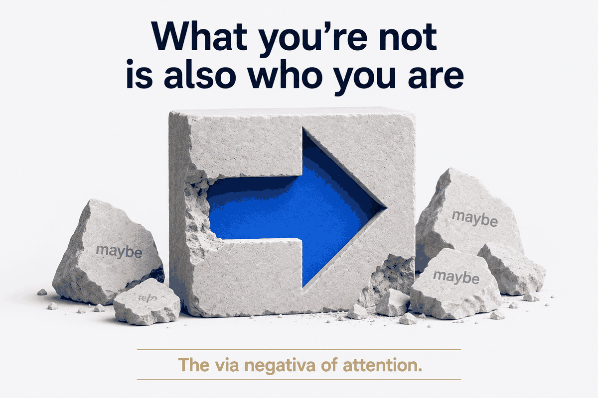
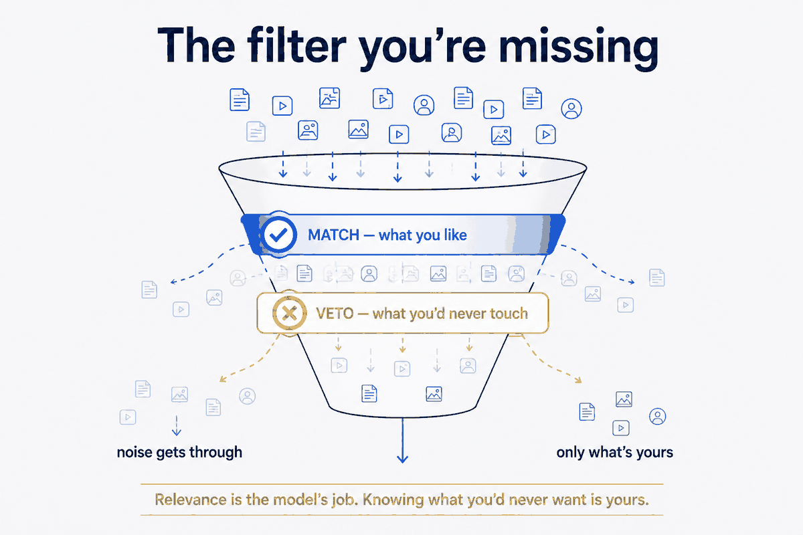
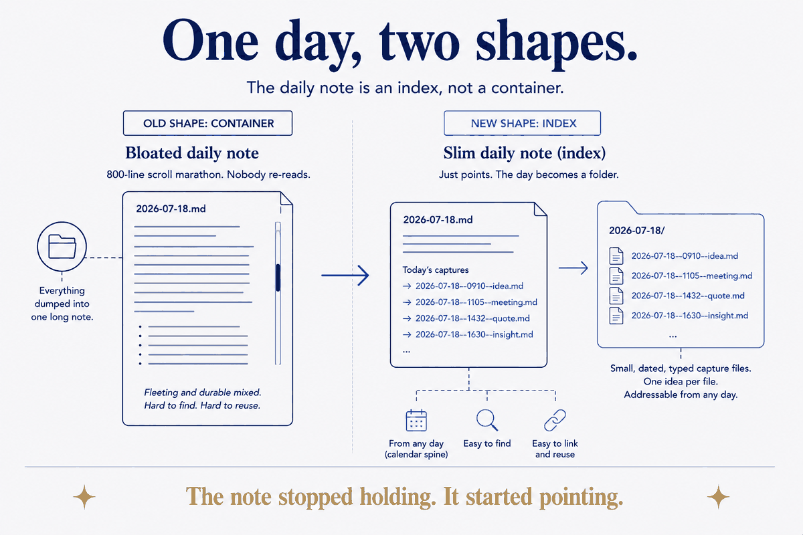

Folders, units, captures and filters. The small structural choices that decide whether notes can be found and reused. Newest first.

Structure Beats MagicA binary file can't be searched, can't be queried, and can't hold a single link. Put a markdown note beside it and all three problems go away at once.

Structure Beats MagicContracts, subscriptions, family arrangements, the promise you made yourself about the gym — model them as one entity, link the evidence, and an expensive class of silent drift becomes a query.

Structure Beats MagicStructure Beats Magic is usually about the invisible half — the model under your knowledge. But structure only pays off when someone can see it. Visual thinking isn't decoration on top of a data model; it's the other half of the same craft.

For knowledge workersThe PKM crowd declared folders dead. My whole system runs on them — because folders and links aren't two teams, they're two altitudes. And the folder-note reconciles them.

For knowledge workersOne principle runs my whole content system: every article, image, concept, and review is an atomic folder that carries everything about itself — and the database is just a queryable view of it.

For knowledge workersA refused refund, a broken tap, a subscription that came back from the dead. The vault doesn't stop things going wrong — it stops them getting lost, and it learns from each one.

For knowledge workersStop thinking of your notes as a filing cabinet. Think of them as neurons — small, single-purpose, wired together. Once you do, everything about how to build a second brain falls into place.

For knowledge workersThe personal companion to the anti-interests system: the same list of noes, but about you — identity by subtraction, and the focus on the other side. The via negativa of attention.

For knowledge workersThe systems piece: give your AI a veto list — the 'NOT' clause every personalization pipeline is missing. (Its companion, What You're Not Is Also Who You Are, is about what that list does to you.)

For knowledge workersMost daily-note systems treat the daily-note as the container. I treat it as an index — and put the day's captures in sibling files.